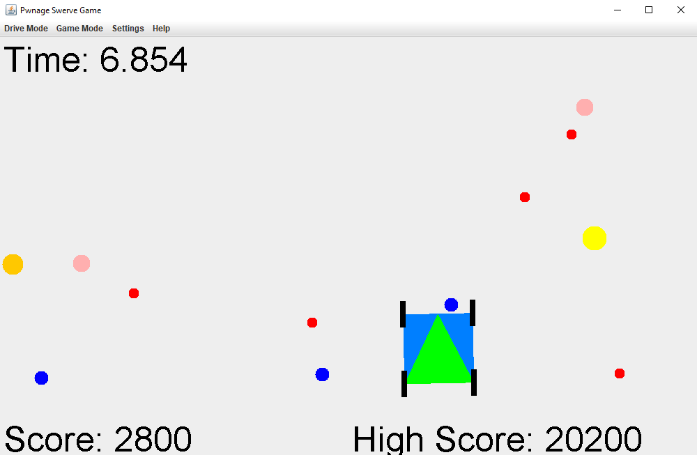
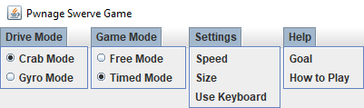

Swerve Drive System Control
This project was created for the FIRST Robotics Competition (FRC), a competition where teams of students have six weeks to build a robot and compete in regional events. My team decided that it wanted to create a prototype for a swerve drive, a very maneuverable design where each wheel can both spin in place as well as roll forward and backward. To control this new drive, I undertook the development of the code for the swerve drive. To demonstrate how the control system works visually at our competition, I also wrote a Java application that simulates the robot. One of our mentors half-joking suggested that I should turn it into a game. So, I added balls that can be picked up for points. The code for this game can be found here and a zip file can be downloaded here.
Development Process
The first step of code development was to determine how the wheels should be positioned. I researched what drive modes other teams use to quickly determine which system works the best. Another team had been using a swerve drive for many years, so I decided to look at how they control their robot. To better understand the team’s code, I made diagrams of their representation of their swerve drive. After fully comprehending their strategy, I decided to emulate one aspect of the team’s idea.

Finally, it was time to write the first version of the code. I started by making a PID algorithm that would position the steer motors. The first iteration had five drive modes, including an original mode.
Since the robot was not finished upon the completion of the first iteration of the code, debugging did not begin until the start of build season. To debug the code, I broke it into small parts to find bugs without destroying any motors. However, the final mechanical design for the swerve drive was modified to no longer allow for continuous rotation. To compensate for this, I had to add code to avoid the dead stops which the wheel could not physically move though.
At this point the code started to get too complex for one file, so I split it into three separate files to add a layer of abstraction. The MServo class controlled the steer motor and steer encoder, the SwerveModule class controlled an MServo class in addition to a drive motor, and the Swerve class uses four SwerveModule classes to simulate the four swerve modules.

To fix elusive logic errors, I created a way to simulate what the robot would do given a set of joystick values. It then prints all relevant variables, so I can determine if the program was functioning as it should. This simulation was very useful for the development process and I was able to discover many bugs without needing to physically move the motor and risk destroying it.

After finally developing a stable version of the code, I continued to improve upon it. I added two more drive modes, one of which improved driver control, and other used a gyro to make the robot more intuitive to drive. After a screw jammed a motor during a meeting, I created safety code to detect when a motor was malfunctioning and to respond accordingly.
Final Code Description
The code is divided into three main classes: MServo, SwerveModule, and Swerve.
MServo (a.k.a. Meta Servo) deals with controlling the Steer motor using a passed in target and an encoder. The main function is SetAngle which uses a PID algorithm to turn the wheel to the angle that is passed in. Also in this function, the code checks to make sure that the motor is not running into a dead stop.
SwerveModule manages the MServo in conjunction with the drive motor. The main function of this class is CtrlModule which uses MServo to position the angle of the motor and sets the drive motor to the speed that is passed in. CtrlModule also sees if it is faster to turn to the angle 180 degrees away and switches the drive motor direction, then it goes to the passed in target.
The final class is Swerve which deals with four SwerveModules and uses the joysticks to determine at what angle the wheels need to be turned to and at what speed. The Drive function is called by the mainline code to drive the robot. It starts out by converting the joystick values into angles and speeds which gets passed into the SwerveModule objects. The way the joystick values get converted into angles and speeds changes with different drive modes.
The Swerve code has seven drive modes: lock, tank, translate, car, steer, kine, and gyro modes.
- Lock mode is used to “lock” the robot in place. The angles of the wheels are passed in and it turns the wheels to them. This is used when I want the robot to not be pushed around.
- Tank mode operates exactly a tank drive. The left Y axis controls the left drive motors and vice-versa.
- Translate mode only translates and does not rotate. The X axis translates sideways, and the Y axis translates forward and backward.
- Car mode moves the robot like a car. The Y axis makes the robot move forward and backward, and the X axis steers like a steering wheel. Unlike a car if the X axis is at the maximum or minimum than the robot will turn in place.
- Steer mode has one stick for translation like translation mode and one axis for rotation. Rotation only turns the wheel, so the translation will need to be applied to move the robot. This is because the rotation acts like a steering wheel.
- Kine mode is similar to steer mode but it allows the robot to move using only the rotation axis.
- Gyro is the same as kine but instead of forward joystick motion making the robot move forward relative to itself, it makes the robot go forward relative to the field.
- Gyro Wheel mode is similar to gyro mode, but the rotation stick is used to point to the direction the robot is meant to face.

For the translate, car, steer, kine, and gyro modes, the Swerve class uses an algorithm, described below, to calculate the angles and speeds of the wheels. The algorithm begins with translate X, translate Y, and rotation values being passed in. Pivot Angle is calculated by taking the direction of translation minus PI/2 radians. Turn Angle is calculated by converting the rotation value from [-1, 1] to [0, 2*PI]. Using the Turn angle and the sensitivity, which is a passed in constant, I solve the blue triangle for dZ. The blue triangle is a right triangle so using trigonometry:
tan(TurnAngle) = dZ/Sensitivity
Solving for dZ:
dZ = tan(TurnAngle)*Sensitivity
Next, solving for dX and dY by using the red right triangle.
dX = dZ*cos(PivotAngle)
dY = dZ*sin(PivotAngle)
Now I have our X and Y coordinates for the point of rotation. Using half the robot length and half the robot width I can determine the distances to the pivot points for each of the wheels. The wheels are pointed perpendicular to the line connecting the pivot point and the wheel. The speeds of the wheels are the relative distances of the wheel to the pivot point.
Swerve Game
Implementation
This game was written in Java. The game engine was written from scratch using the built-in Swing and AWT for the GUI and custom collision detection. The JInput library is used for interfacing with joysticks.
Description
The goal is to drive around and collect as many balls as possible. Balls are collect by running them over while travelling forward using the front end of the swerve drive denoted by the point of the green triangle. The time is limited to 20 seconds and the bigger the ball the more points it is worth.
Options
The game contains two drive modes Crab which is equivalent to the Kine mode described above, and Gyro mode which is the same. There are two game modes. Free mode is used for demonstrational purposes. In this mode the robot can move even after time runs out. Timed mode is used for gaming purposes. In this mode the robot will be stopped after time runs out. In the settings tab the user can specify the size and speed of the robot as well as the input device used. The final tab provides help about the goal of the game and the controls
Methods of control
The game supports three methods of control: keyboard, gamepad, and two joysticks.
With keyboard controls WASD is used to translate the robot and the left/right arrows to turn. The Space key is used to start timing.
A gamepad is an input device like an xbox controller. To drive the bot, use the left stick to translate and the right stick X axis to turn. Button 5 is used to start timing. On an xbox controller this is the A button.
A joystick is an input device like an attack controller. Two of them are needed to play. To drive the bot, use the left stick to translate and the right stick X axis to turn. Button 5 is used to start timing.
Release and Reception
As this was a project for FRC, I decided to release the game on Chief Delphi, the FRC forums, as found here. The game was also available to be played in our pit area at the world championship that was hosted the next day.
The game was very well received as it did very effectively demonstrate how the swerve drive worked and people always love playing games. While at the competition and on the forums, I got great feedback about things to fix or add for the first update. Someone even made a thread on the forums to compare high scores (here). Most surprising, at a different competition one month later I saw the person sitting in front of me was playing the game. In any case, the control system and the game were both fun projects that I learned a lot from.
Videos In action
A video demonstrating how an individual wheel moves.This video was our reveal video showing off our robot.
This is a video of one of our matches. We are the red robot starting with two balls.